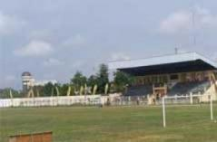
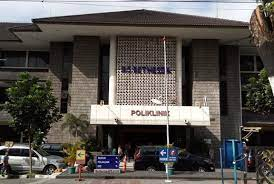
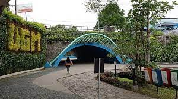
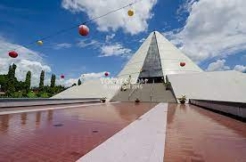

<!DOCTYPE html>
<html lang="en">
<head>
	<base target="_top">
	<meta charset="utf-8">
	<meta name="viewport" content="width=device-width, initial-scale=1">
	
	<title>Layers Control Tutorial - Leaflet</title>
	
	<link rel="shortcut icon" type="image/x-icon" href="docs/images/favicon.ico" />

    <link rel="stylesheet" href="https://unpkg.com/leaflet@1.9.4/dist/leaflet.css" integrity="sha256-p4NxAoJBhIIN+hmNHrzRCf9tD/miZyoHS5obTRR9BMY=" crossorigin=""/>
    <link rel="stylesheet" href="https://unpkg.com/leaflet-control-geocoder/dist/Control.Geocoder.css" />
    <link rel="stylesheet" href="./lib/leaflet-measure.css"/>
	<script src="https://unpkg.com/leaflet@1.9.4/dist/leaflet.js" integrity="sha256-20nQCchB9co0qIjJZRGuk2/Z9VM+kNiyxNV1lvTlZBo=" crossorigin=""></script>
    <script src="https://unpkg.com/leaflet-control-geocoder/dist/Control.Geocoder.js"></script>
	<script src="./lib/leaflet-measure.js"></script>
	<style>
		html, body {
			height: 100%;
			margin: 0;
		}
		.leaflet-container {
			height: 600px;
			width: 1210px;
			max-width: 100%;
			max-height: 100%;
		}
        img.huechange { filter: hue-rotate(120deg); }

	</style>

	
</head>
<body>

<div id='map'></div>

<script>

const places = L.layerGroup();


var mGSP = L.marker([-7.770001, 110.377813]).bindPopup('<h2>This is Grha Sabha Pramana</h2><p>Grha Sabha Pramana merupakan gedung pertemuan serbaguna milik Universitas Gadjah Mada yang pengelolaannya diserahkan kepada UGM Residence pada bulan Maret 2015.</p><p>Gedung dengan atap joglo ini dibangun pada tahun 1994 dan diresmikan saat Dies Natalis UGM ke-46 pada tanggal 19 Desember 1995. Gedung ini berfungsi sebagai sentra kegiatan akademik, seperti wisuda, seminar/workshop dan non akademik, seperti pertunjukan musik, seni dan acara pernikahan.</p>').addTo(places); 
const mGEODESI = L.marker([-7.763958, 110.37275]).bindPopup('<h2>This is Teknik Geodesi</h2><p>Departemen Teknik Geodesi (DTGD) Fakultas Teknik Universitas Gadjah Mada merupakan salah satu dari delapan Departemen yang ada di lingkungan Fakultas Teknik UGM.</p><p>Pada awal berdirinya yaitu pada bulan Agustus tahun 1959, DTGD masih merupakan program studi gabungan dengan program studi Teknik Geologi yang bernama Bagian Teknik Geodesi dan Geologi.</p><p>Pada tahun 1962, berdasar UU No. 22 Tahun 1961, Bagian Teknik Geodesi dan Geologi dipecah menjadi dua bagian yaitu Bagian Teknik Geodesi dan Bagian Teknik Geologi yang masing-masing berdiri sendiri-sendiri.</p>').addTo(places);
const mKRIDOS = L.marker([-7.787846, 110.374295]).bindPopup('<h2>This is Stadion Kridosono</h2><p>Stadion Kridosono berada di wilayah Kotabaru Yogyakarta. Stadion ini biasa digunakan untuk kegiatan olahraga masyarakat Yogyakarta khususnya olahraga.</p><p>Meskipun saat ini intensitas kegiatan olahraga sudah tidak banyak seperti dulu, namun stadion ini masih cukup diperhitungkan untuk melakukan aktivitas olahraga.</p>').addTo(places);
const mBETHESDA = L.marker([-7.784017, 110.377605]).bindPopup('<h2>This is Rumah Sakit Bethesda</h2><p>Bangunan Rumah Sakit Bethesda merupakan rumah sakit tertua di Yogyakarta, lokasi keberadaannya menjadi penanda sekaligus komponen yang paling menonjol pada kawasan Kota Baru.</p><p>Rumah Sakit ini didirikan oleh yayasan keagamaan non pemerintah berupa organisasi misionaris Zending Gereformeerde Amsterdam. Keberadaan bangunan ini mendahului kawasan permukiman Kota Baru yang dibangun kemudian. Sebagai kompleks bangunan, rumah sakit ini terdiri dari beberapa unit bangunan yang memiliki keterkaitan fungsi.</p>').addTo(places);
const osm = L.tileLayer('https://tile.openstreetmap.org/{z}/{x}/{y}.png', {
	maxZoom: 25,
	attribution: '&copy; <a href="http://www.openstreetmap.org/copyright">OpenStreetMap</a>'
});

const osmHOT = L.tileLayer('https://{s}.tile.openstreetmap.fr/hot/{z}/{x}/{y}.png', {
	maxZoom: 25,
	attribution: '&copy; <a href="https://www.openstreetmap.org/copyright">OpenStreetMap</a> contributors, Tiles style by <a href="https://www.hotosm.org/" target="_blank">Humanitarian OpenStreetMap Team</a> hosted by <a href="https://openstreetmap.fr/" target="_blank">OpenStreetMap France</a>'
});

const map = L.map('map', { 
	center: [-7.773006, 110.372684],
	zoom: 13,
	layers: [osm, places]
	
});


const baseLayers = {
	'OpenStreetMap': osm,
	'OpenStreetMap.HOT': osmHOT
};

const overlays = {
	'Places': places
};

const layerControl = L.control.layers(baseLayers, overlays).addTo(map);


var wisdompark = L.marker([-7.769379, 110.38283]).bindPopup('<h2>This is Wisdom Park</h2><p>Taman kearifan atau yang biasa dikenal dengan nama Wisdom Park merupakan ruang terbuka hijau milik Universitas Gadjah Mada yang dikelola oleh UGM Residence. Banyak kegiatan yang dapat dilakukan di area dengan luas sekitar 6 hektar ini.</p><p>Di pertengahan tahun 2019 Wisdom Park mendapat bantuan dari Kementerian Pekerjaan Umum dan Perumahan Rakyat untuk menambah fasilitas yang ada dan mulai Bulan Januari 2020 fasilitas dan spot baru di Wisdom Park sudah bisa digunakan.</p><p>Adapun fasilitas terbaru yaitu penambahan mushola, toilet, green house, lampu taman, kursi taman, planter box, dan vertical garden di area selatan dan juga penambahan spot baru berupa demaga apung, view deck, dan forest walk di area Danau Bijak Wisdom Park.</p>'); 
var monjali = L.marker([-7.749768, 110.369639]).bindPopup('<h2>This is Monumen Jogja Kembali</h2><p>Museum Monumen Yogya Kembali atau yang lebih dikenal dengan Monjali merupakan sebuah museum yang terletak di Jongkang, Sariharjo, Ngaglik, Kabupaten Sleman, Provinsi Daerah Istimewa Yogyakarta.</p><p>Museum ini mulai dibangun pada tanggal  29 Juni 1985 dan diresmikan pada 6 Juli 1989 oleh Presiden Soeharto.</p><p>Museum ini didirikan dengan tujuan untuk memperingati peristiwa sejarah ditariknya tentara kolonial Belanda dari Ibu Kota Yogyakarta pada tanggal 29 Juni 1949, yang sekaligus juga menjadi penanda berfungsinya kembali Kota Yogyakarta sebagai Ibu Kota Republik Indonesia yang direbut dari penjajah Belanda.</p><p>Gagasan awal pendirian Museum Monjali disampaikan oleh Kolonel Sugiarto dalam peringatan Yogya Kembali yang diselenggarakan pada 29 Juni 1983.</p>');


var iconic_places = L.layerGroup([wisdompark, monjali]);


const openTopoMap = L.tileLayer('https://{s}.tile.opentopomap.org/{z}/{x}/{y}.png', {
	maxZoom: 25,
	attribution: 'Map data: &copy; <a href="https://www.openstreetmap.org/copyright">OpenStreetMap</a> contributors, <a href="http://viewfinderpanoramas.org">SRTM</a> | Map style: &copy; <a href="https://opentopomap.org">OpenTopoMap</a> (<a href="https://creativecommons.org/licenses/by-sa/3.0/">CC-BY-SA</a>)'
});
layerControl.addBaseLayer(openTopoMap, 'OpenTopoMap');
layerControl.addOverlay(iconic_places, 'Iconic Places');


var popup = L.popup();

function onMapClick(e) {
    popup
        .setLatLng(e.latlng)
        .setContent("Koordinat titik ini: " + e.latlng.toString())
        .openOn(map);
}

map.on('click', onMapClick);

L.Control.geocoder().addTo(map);
//Leaflet measure
//L.control.measure.addTo(map);

</script>


</body>
</html>